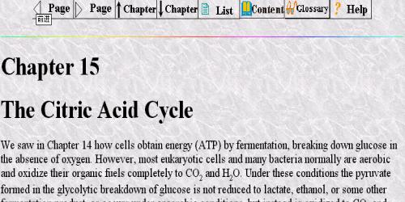
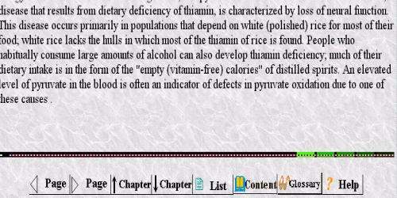

The two rows of links on the top and bottom of the page function as:
| to the previous page | |
| to the next page | |
| to the previous chapter | |
| to the next chapter | |
|
to the detailed content where you can choose to go directly to a specific topic |
|
| to the main content where you can choose another chapter to view | |
| to the glossary where you can find the explanation of terms appearing in the book | |
|
to the help |

